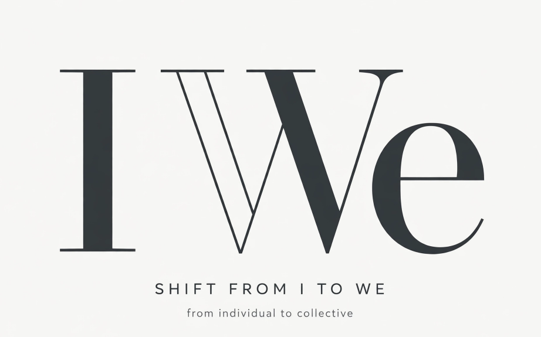
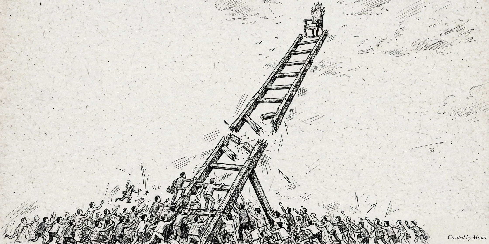
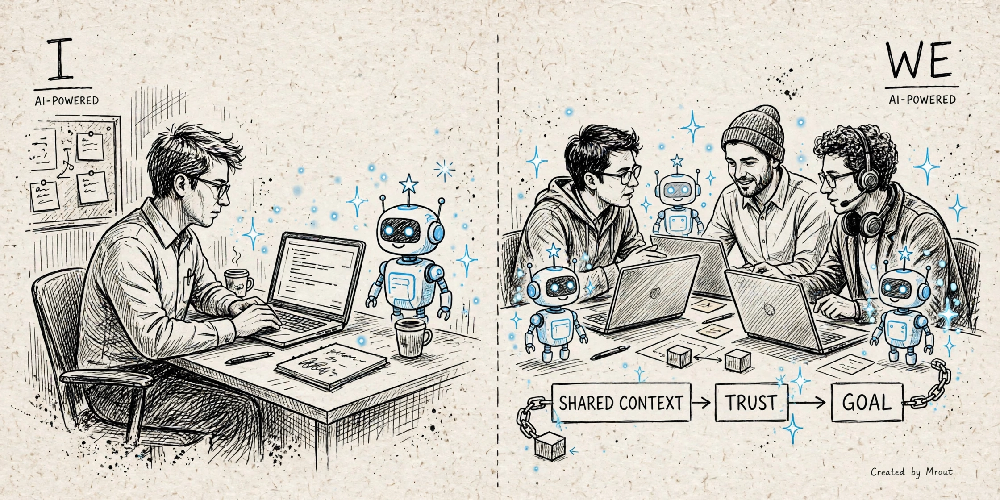
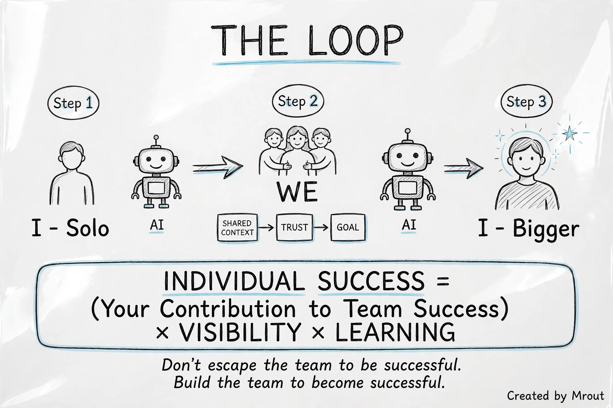

By Makareswar Rout • Nov 23, 2026

Lately I've been noticing a very subtle shift in how people talk at work.
It sounds like this:
"Here is what I have done to get us started, and here is what we can do to take it across the finish line."
On paper, it's just pronouns. In reality, it's a mindset shift. And right now, it's harder than ever — because two forces are colliding at the exact same time.
When growth slows down and next-level opportunities feel scarce, a quiet competition creeps in. Teams that used to collaborate start competing with the people sitting right next to them.
There is an unspoken pressure to prove "I am the best" just to stay visible. People hold onto credit. They over-emphasize "I have done" because they are afraid that if they say "we," their impact will disappear.

There is math behind it:
And:
When there is only one visible path (vertical promotion) and transparency is low, Risk spikes. When Risk spikes, sharing credit feels unsafe. So "we did" becomes "I did" — not out of ego, but out of fear of becoming invisible.
AI now handles so much of the "I can do" work — writing, coding, analyzing, drafting. One person with the right tools can execute faster than an entire team used to.
Before AI:
You needed "we" to get big things done.
Now:
Which raises a fair question: Do we even need to collaborate anymore?
This is where the two forces collide:
Career anxiety tells you: protect your credit.
AI tells you: you can do it alone, faster.
Both push you to "I" at the same time. That's why this feels so intense right now.
But it's a trap.
Because when everyone can generate "I can do" work with AI, solo output becomes abundant. And abundant is not valuable.

What stays scarce — and becomes our only real advantage — is what AI cannot replicate:
Anyone can use AI to work faster alone. What AI can't replicate is trust, shared context, and what happens when a team genuinely rallies around "what we can do together."
AI can multiply trust and context, but it cannot create them.
So the equation flips:
If AI does "I can do," humans must do "We can do."
Teams don't become hyper-competitive in a vacuum. They respond to the environment leaders create.
If you want more "we" and less "I," audit what you actually recognize:
→ Do you celebrate the loudest solo performer, or the person who makes the whole room better?
→ Do people see a clear path to grow, or does growth feel like a black box with 2 seats?
→ Do you measure collective wins, or only individual metrics?
Showing what I have done proves competence.
Knowing what we can do builds momentum.
In an era where AI makes solo work cheap and opportunities feel tight, the differentiator isn't being the best solo player — it's knowing how to bridge the gap from "I" to "we."
Both forces are happening at once. Which one will you design for?

We don't move from I to We in a straight line — we move in a loop.
We begin with I to survive, we grow into We to thrive, and when scarcity hits, we retreat back to I to protect ourselves. AI just makes that retreat easier to justify.
The move from We to I is instinctive. The move from I to We is intentional — and it needs environment that creates enough safety to make We possible again.
Life, then, is not about staying in We. It's about noticing when we are stuck in I, and choosing to return to We and continue the loop without breaking.
Have you noticed teams getting more competitive lately, or is collaboration getting stronger where you work? Comment "I" if you're seeing more competition, "We" if collaboration is winning 👇